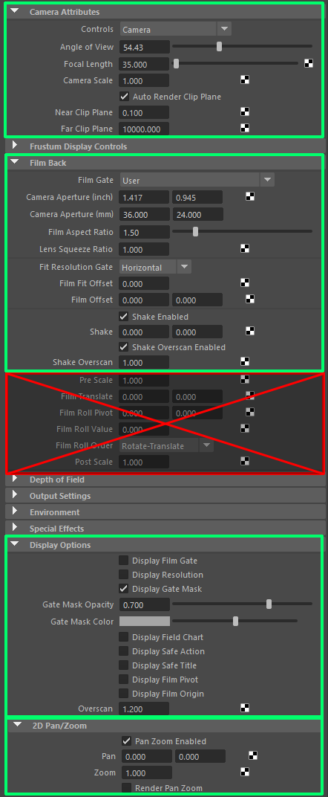

About Camera Attributes¶
Contents of this page:
Supported Attributes¶
RenderOverride supports the main camera attributes
Please note that some attributes are not supported
Changing the value of unsupported attributes will result in broken layout of text, letterboxes, etc.
The green boxes in the following figure show the corresponding attributes
Red boxes indicate unsupported attributes
